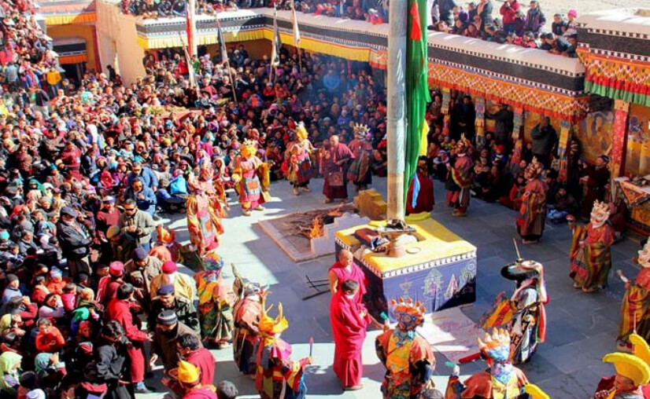

Welcome to Ladakh!

Ladakh, nestled in the northernmost region of India, boasts a unique and captivating culture shaped by its rugged
landscape and Buddhist heritage. The culture of Ladakh is deeply influenced by Tibetan Buddhism, reflected in its
monasteries, festivals, and daily life. Monasteries like Hemis, Thiksey, and Diskit are not only religious centers
but also repositories of art, history, and learning. Festivals such as Losar, Hemis Tsechu, and Ladakh Festival
are celebrated with colorful masks, traditional dances, and vibrant music, bringing the community together in
joyous harmony. Ladakhi cuisine, characterized by its hearty and warming dishes like thukpa, momos, and butter
tea, reflects the region's adaptation to its cold, arid climate. The traditional attire, including the goncha and
perak, showcases the intricate craftsmanship and distinct style of the region. The people of Ladakh are known for
their resilience, spirituality, and hospitality, making their culture a fascinating blend of tradition,
simplicity, and warmth amidst the serene and breathtaking landscape of the Himalayas.